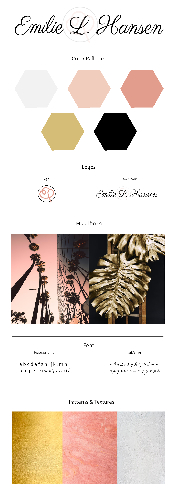

Flow 5 - Eksamensprojekt
I vores sidste flow for semesteret, flow 5, har vi haft til opgave at redesigne vores portefølje fra flow 2.
Opgave Flow 5.7 - Eksamensprojekt
Opgavebeskrivelse
Vi har skulle tage vores portefølje fra flow 2 og videre udvikle den med vores nye viden fra flow 3 og 4.
Der har været fokus på responsivtdesign, brugertest, projektplanlægning og konceptudvikling.
Jeg har linket den fulde opgavebeskrivelse nedenunder.
Projektplanlægning
Da jeg skulle vælge hvordan jeg ville planlægge mit projekt, havde jeg svært ved at bestemme mig for hvad der passede bedst til mig.
Jeg lavede først en trello, men jeg følte jeg manglede noget hvor jeg kunne vælge dage og hvor man kunne se hvor langt man var med de forskellige opgaver.
Jeg valgte derfor at lave en gantt-chart og dette har fungeret rigtig godt for mig.
Første brugertest
Før jeg begyndte på mit redesign, havde jeg til opgave at lave en brugertest af min daværende portefølje.
Jeg udvalgte 5 testpersoner som hver især fik tre spørgsmål de skulle svare på omkring min portefølje.
Efter jeg havde samlet testresultaterne sammen fra brugertesten, gik jeg derefter i gang med mit redesign.
Ud fra min brugertest fik jeg følgende resultater:
- Forsiden, mindre billeder og mere viden omkring hvad siden er og kan
- Bedre alignment
- Enten fjerne eller udstrege de andre semestre, indtil de kan tilgås
- Sørge for at alle formater er det samme, cirkler, skriftstørrelse, tegnsætning
- Fjerne navigation i footeren og kun have den i toppen (evt. med en til toppen pil)
- Mere kontrast mellem farver, mere guld, mere ens skriftfarve
Konceptudvikling
Moodboards
Det første jeg gjorde i min konceptudvikling var at lave to moodboards.
Jeg har været i tvivl om hvilken vej jeg ville gå med min sides farver og stemning, og har derfor forsøgt mig i to moodboards.
På denne måde kunne jeg se hvilken en af dem jeg bedst kunne lide og hvilket bedst passer til mig.
Mit første moodboard er baseret på tre nøgleord:
- Industrial interior
- Warm
- Modern

Mit andet moodboard er baseret på tre nøgleord:
- Light pink
- Gold
- Girly

Jeg har valgt at gå med det lyserøde moodboard, da jeg synes det er mere spændende og minder mere om mig.
Det er lidt mere ungdommeligt og mere iøjnefaldende end det andet moodboard.
Farver
Jeg valgte at gå med 5 farver til mit projekt:
- Lys lyserød #F1CDBE
- Mørkere lyserød #E39D8C
- Guld #D5BC77
- Sort #000000
- Hvid #FFFFFF
Typografi
Til min font har jeg bestemt mig for at gå med en font som minder om min tidligere font.
Jeg kan godt lide det 'lette' og simple udtryk som den skrifttype jeg har valgt giver.
Fonten hedder: Source Sant Pro Ultra Light
Jeg overvejede også at bruge skriften 'Parisienne', men fandt ud af at det blev for meget.
Logo
Jeg havde allerede lavet en logo sidste projekt, som var baseret på E og L i mit navn.
Jeg valgte at lave mit logo lidt om så det passede bedre til mit nye farveskema og det 'lette' look.
Logo før

Logo efter

Udover det havde jeg lavet et wordmark logo, som jeg tænkte jeg kunne bruge som overskrift eller til min navbar.

Styleguide
Ud fra alle mine designvalg har jeg lavet en styleguide over min side.
Her har jeg indsat font, farver, typografi, tekstur og logo.
Tryk på billede for at få det op på en ny side.

{kind=link}
Skitser, wireframes & Mockup's
Skitser
Det første jeg gjorde inden jeg begynder på computeren med skitser, var at tegne nogen i hånden.
Jeg kiggede på en masse forskellige porteføljer for at få inspiration til min side.
Jeg vidste jeg ville have en lang forside frem for en masse små sider, udover mine flow sider.

Wireframes
Jeg har til hver af mine sider lavet wireframe, sådan så jeg vidste hvor tingene skulle stå på min side.
Til min 1. semester side havde jeg valgt en sidebar fremfor en header, så man nemmere kunne finde rundt i semesteret.
Desuden har jeg valgt venstemargen på disse sider da der er mere læsestof, fremfor centreret som jeg har på forsiden.

Mock-ups
I min mock-up bestemte jeg mig for hvor jeg ville have de forskellige farver på mine sider.
Jeg vidste at jeg ville have nogen knapper på min side hvor at man skulle kunne hente længere versioner af opgaver, så hele siden ikke blev for lang.

Sitemap & Flowcharts
Efter jeg havde kodet min side havde jeg lavet en sitemap over min side.

Ud fra min sitemap kan man se hvilke sider som kan tilgås fra min navigationsbar.
Jeg har også lavet en flowchart over at sende mig en mail.

Videosekvens
Jeg havde til opgave at lave en videosekvens af mig selv eller en video der sagde noget om mig.
Her har jeg valgt at lave en 'fun-facts' video om mig, hvor man kan se hvem jeg er og lære lidt om mig.
Min video
Herunder er den fulde PDF med storyboard, manuskript og virkemidlerne til min video
Anden brugertest
Efter jeg var færdig med at kode min portefølje lavede jeg endnu en brugertest.
Jeg udvalgte nogen testpersoner som jeg gav følgende opgaver:
- Skriv mig en mail
- Se mit storyboard til min video fra flow 5
- Se min semester forside
Jeg bad dem også komme med andet feedback hvis de havde noget de synes der skulle laves om.
Jeg fik følgende resultater:
Forbedringer i fremtiden
Herunder har jeg lavet en liste med ting som jeg gerne vil rette i fremtiden eller ting jeg ville have lavet hvis jeg havde mere tid.
- Ikoner på kontakt
- Gennemsigtig til solid navbar
- Dropdown på ’1. Semester’ på navbar
- Dropdown i sidebar under flows